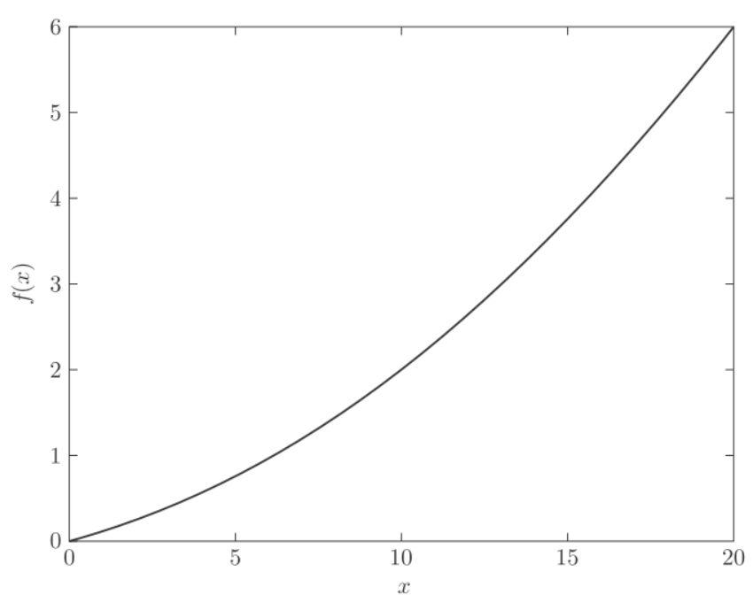
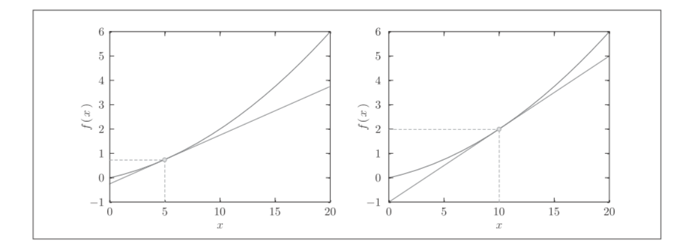
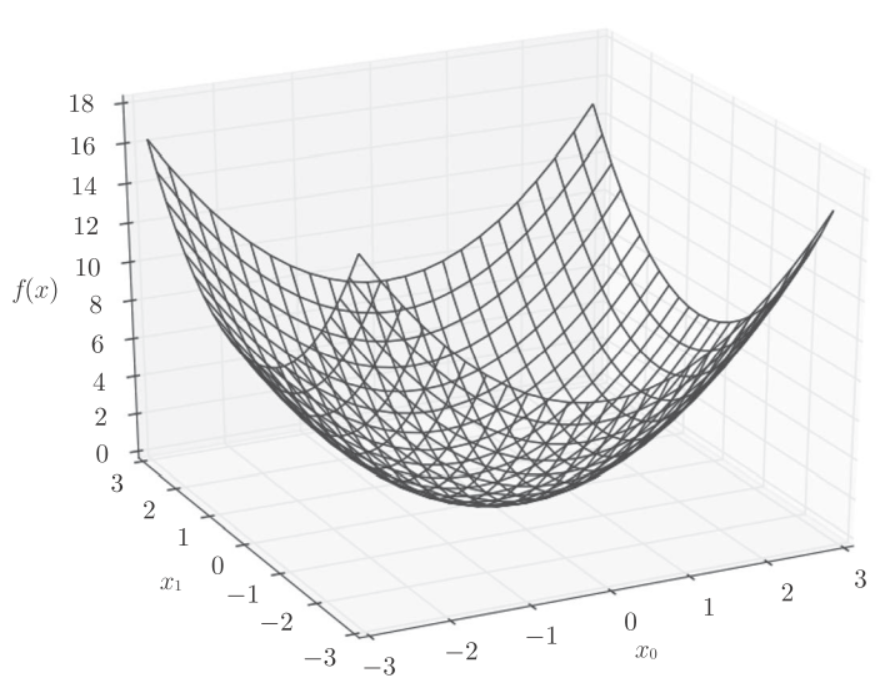
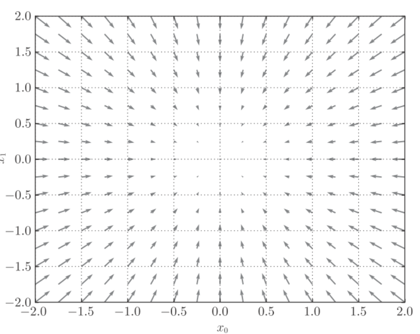
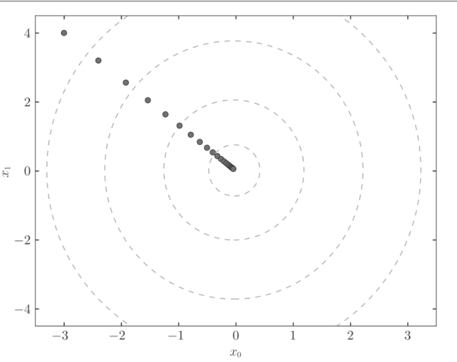

derivative
导数就是表示某个瞬间的变化量:
表示关于的导数, 即相对于的变化程度, x的微小变化将导致函数的值在多大程度上发生变化.其中, 微小变化的无限趋近0, 表示为.
python实现:
def numerical_diff(f, x):
h = 10e-50
return (f(x+h) - f(x)) / h函数有两个参数: “函数f"和"传给函数f的参数”. 这样的实现有两个问题:
- rounding error, 由于h太小, 会被四舍五入
np.float32(1e-50)=0 - 导数应该对应x处的斜率(切线), 但实际计算的是和之间的斜率(因为h不可能无限接近0).
为了减少这个误差, 我们可以计算函数f在和之间的差分, 这种方法以x为中心, 称为中心差分(x+h和x之间的差分称为向前差分)
def numerical_diff(f, x):
h = 1e-4 # 0.0001
return (f(x+h) - f(x-h)) / (2*h)微小的差分求导数的过程称为数值微分(numerical differentiation), 而基于数学式的推导求导数的过程，则用“解析性”(analytic). 如的导数, 可以通过求解.
数值微分的例子
python实现公式::
def function_1(x):
return 0.01*x**2 + 0.1*x
import numpy as np
import matplotlib.pylab as plt
x = np.arange(0.0, 20.0, 0.1) # 以0.1为单位，从0到20的数组x
y = function_1(x)
plt.xlabel("x")
plt.ylabel("f(x)")
plt.plot(x, y)
plt.show()
计算和的导数
numerical_diff(function_1, 5) # 0.1999999999990898
numerical_diff(function_1, 10) # 0.2999999999986347的解析结果是. 因此在和处真正的导数是0.2和0.3, 和上述结果相比, 误差非常小.

偏导数
python实现函数:
def function_2(x):
return x[0]**2 + x[1]**2
# 或者return np.sum(x**2)画出该函数的图像:

因为函数中有两个变量, 所以要区分对哪个变量求导数, 是还是, 有多个变量的函数的导数称为偏导数, 写作,
求时, 关于的偏导数
def function_tmp1(x0):
return x0*x0 + 4.0**2.0
numerical_diff(function_tmp1, 3.0) # 6.00000000000378求时, 关于的偏导数
def function_tmp2(x1):
return 3.0**2.0 + x1*x1
numerical_diff(function_tmp2, 4.0) # 7.999999999999119这些问题中, 我们定义了单变量的函数, 并且对这个函数求导. 例如第一个, 固定了的新函数, 然后对进行求导
梯度(gradient)
我们分别计算了的偏导数, 就可以组成, 这样的向量称为梯度(gradient)
python实现:
def numerical_gradient(f, x):
h = 1e-4 # 0.0001
grad = np.zeros_like(x) # 生成和x形状相同的数组
for idx in range(x.size):
tmp_val = x[idx]
# f(x+h)的计算
x[idx] = tmp_val + h
fxh1 = f(x)
# f(x-h)的计算
x[idx] = tmp_val - h
fxh2 = f(x)
grad[idx] = (fxh1 - fxh2) / (2*h)
x[idx] = tmp_val # 还原值
return grad应用:
numerical_gradient(function_2, np.array([3.0, 4.0])) # array([ 6., 8.])
numerical_gradient(function_2, np.array([0.0, 2.0])) # array([ 0., 4.])
numerical_gradient(function_2, np.array([3.0, 0.0])) # array([ 6., 0.])的梯度呈现为有向向量(箭头), 梯度指向函数的最低处(最小值).另外, 离最低处越远, 箭头越大.

梯度法
在梯度法中, 函数的取值从当前位置沿着梯度方向前进一定距离, 然后在新的方向重新求梯度, 再沿着新梯度的方向前进, 如此反复, 不断地沿梯度前进.
表示更新量, 在神经网络中, 称为学习率(learning rate), 表示一次mini-batch迭代中, 学习多少, 多大程度上更新参数.
python实现梯度下降法:
def gradient_descent(f, init_x, lr=0.01, step_num=100):
x = init_x
for i in range(step_num):
grad = numerical_gradient(f, x)
x -= lr * grad
return x参数f是进行最优化的函数, init_x是初始值, lr是学习率(learning rate), step_num是重复次数.
应用: 使用梯度法求的最小值
def function_2(x):
return x[0]**2 + x[1]**2
init_x = np.array([-3.0, 4.0])
gradient_descent(function_2, init_x=init_x, lr=0.1, step_num=100)
# array([ -6.11110793e-10, 8.14814391e-10])最终的结果(-6.11110793e-10,8.14814391e-10)非常接近(0,0), 下图是梯度法的更新过程

神经网络的梯度
神经网络的梯度是指损失函数关于权重参数的梯度, 比如一个2*3的权重的神经网络, 损失函数用表示, 则梯度可以用表示:
第1行,第1列的元素当稍微变化时, 损失函数会发生多大变化.